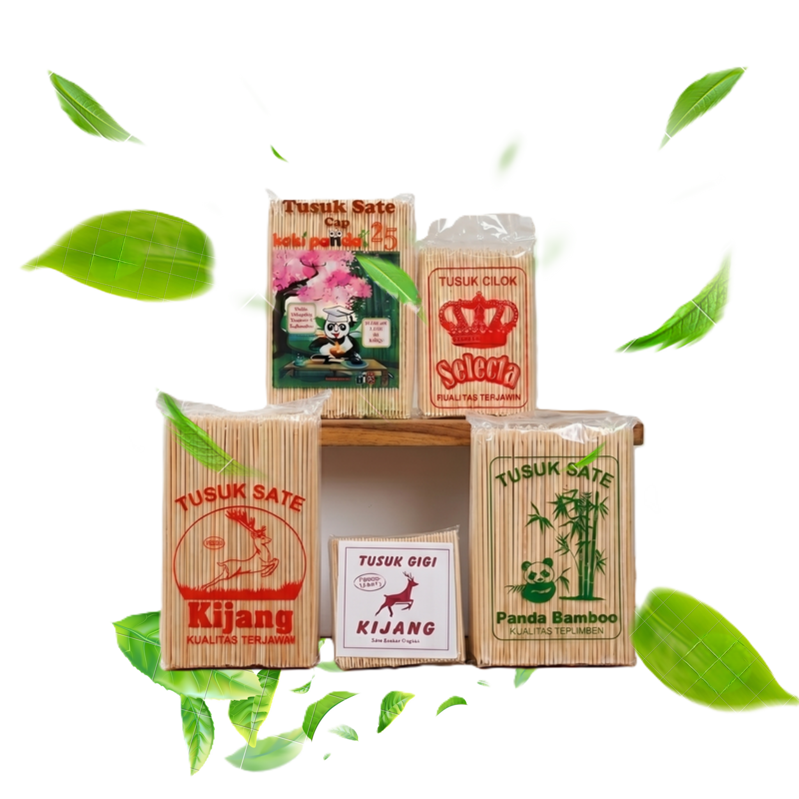

Pilihan terbaik tusuk sate untuk usaha Anda
Tusuk sate berkualitas tinggi, kuat, higienis, cocok untuk usaha kuliner Anda dengan harga terjangkau dan siap kirim.
Pesan Sekarang
Produk Unggulan Kami
Tusuk Sate Cap Kijang
Tusuk sate standar dengan ujung runcing sempurna, sangat cocok untuk sate ayam madura. Tidak mudah patah.
Lihat DetailTusuk Cilok Selecta
Dirancang khusus lebih tebal dan kokoh untuk menahan beban daging sapi atau kambing. Tahan panas tinggi.
Lihat DetailTusuk Sate Cap Panda Bamboo
Potongan lebih mulus dan bersih, bebas serpihan bambu. Sangat estetik untuk sate taichan kekinian.
Lihat DetailKatalog Produk
Tusuk Sate Ayam Panjang 20cm
Tusuk Sate Kambing
Tusuk Cilok / Sempol
Tusuk Yakitori Dayung
Tusuk Sate Taichan 15cm
Tusuk Sate Grosir Karungan (Super Kokoh)
Mitra Terpercaya untuk
Usaha Kuliner Anda
Produksi & Pengiriman Cepat
Stok selalu tersedia. Pesanan diproses dan dikirim dengan cepat untuk memastikan usaha Anda tidak pernah kehabisan bahan baku.
Bisa Pesan Partai & Eceran
Kami melayani pembelian dalam jumlah besar (karungan/grosir) maupun jumlah kecil (pack) menyesuaikan kebutuhan Anda.
Transaksi Aman
Kami adalah produsen terpercaya. Pembayaran aman dan pesanan dijamin sampai ke lokasi Anda tepat waktu.
Garansi Retur 100%
Garansi pengembalian dana atau tukar barang jika produk yang Anda terima dalam keadaan rusak, patah, atau berjamur.
Kualitas Premium & Higienis
Terbuat dari bambu pilihan. Proses produksi dijaga kebersihannya, menghasilkan tusuk sate yang halus, kokoh, dan bebas serpihan.
Berbagai Jenis Ukuran
Tersedia berbagai varian ukuran dan ketebalan, mulai dari tusuk sate ayam reguler, sate kambing, taichan, hingga sempol.
Siap Memenuhi Kebutuhan
Tusuk Sate Anda?
Jangan ragu untuk menghubungi kami jika Anda memiliki pertanyaan terkait stok produk, penawaran harga grosir, atau ingin memesan langsung. Kami siap melayani pesanan Anda!
Layanan pesan antar via WhatsApp